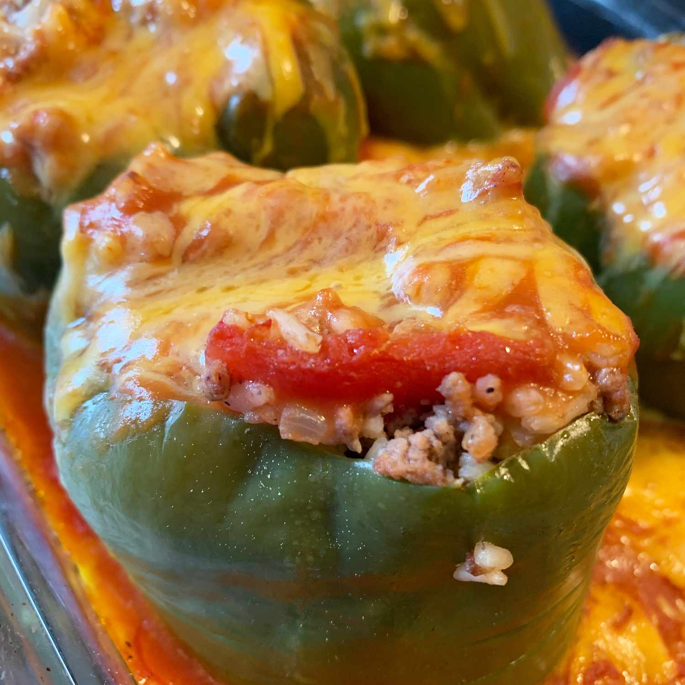

Stuffed Green Peppers

Picture vibrant green bell peppers, tender and enticing, filled with a delectable medley of savory ground meat, aromatic onions, garlic, and cooked rice, all lovingly bathed in a rich tomato sauce.
Discover the time-honored delight of "Stuffed Green Peppers," a cherished traditional Mexican dish that embodies the essence of culinary bliss. Immerse yourself in the joy of preparing this beloved recipe as you transform simple green bell peppers into edible works of art.
With each pepper tenderly stuffed with a mouthwatering fusion of seasoned ground meat, fragrant rice, zesty onions, and vibrant tomatoes, you'll witness a burst of colors and flavors that elevate this dish to an extraordinary level of deliciousness.
As the aroma fills your kitchen, you'll sense the magic unfolding – a symphony of traditional Mexican spices and ingredients coming together in harmony. Baking to perfection, the Stuffed Green Peppers emerge as culinary masterpieces, worthy of celebration and admiration. The process may require a touch of patience, but the payoff is undeniable – a sense of accomplishment that arises from preparing a dish that not only tantalizes the taste buds but also warms the hearts of those you share it with.
So, embark on this culinary journey with enthusiasm, and let "Stuffed Green Peppers" be your gateway to savoring the rich culinary heritage of Mexico. The worthiness of the effort invested will be revealed with every savory bite, reminding you that cooking can be an art that nourishes the soul and brings joy to all who gather around the table.
Ingredients
- 6 green bell peppers
- salt to taste
- 1 pound ground beef
- ⅓ cup chopped onion
- salt and pepper to taste
- 1 (14.5 ounce) can whole peeled tomatoes, chopped
- ½ cup water
- ½ cup uncooked rice
- 1 teaspoon Worcestershire sauce
- 1 cup shredded Cheddar cheese
- 2 (10.75 ounce) cans condensed tomato soup
- water as needed
Steps
- Step
Bring a large pot of salted water to a boil. Cut the tops off bell peppers and remove the seeds. Cook bell peppers in boiling water for 5 minutes; drain. Sprinkle salt inside each bell pepper and set aside.
- Step
Place ground beef and onion in a large skillet over medium heat; cook and stir until beef is browned, about 5 minutes. Drain off excess fat and season with salt and pepper. Stir in tomatoes, 1/2 cup water, rice, and Worcestershire sauce; reduce heat to low, cover, and simmer until rice is tender, about 15 minutes. Remove from heat and stir in cheese.
- Step
Preheat the oven to 350 degrees F (175 degrees C).
- Step
Stuff each bell pepper with beef and rice mixture; arrange open-side up in a baking dish.
- Step
Combine tomato soup with just enough water in a medium bowl to make the soup a gravy consistency; pour over the bell peppers and cover with aluminum foil.
- Step
Bake in the preheated oven until heated through and cheese is melted and bubbly, about 25 to 30 minutes.